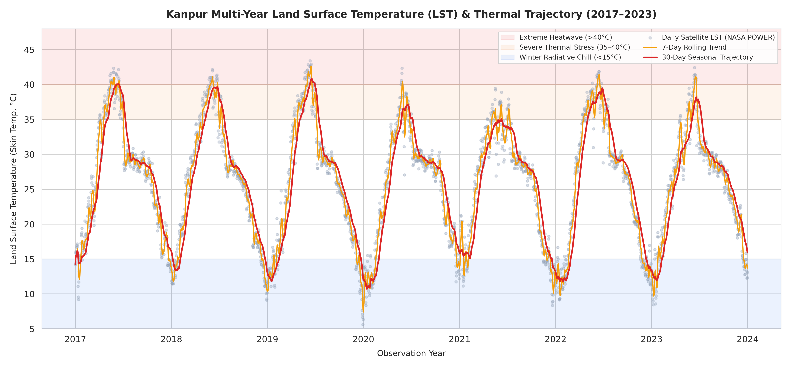
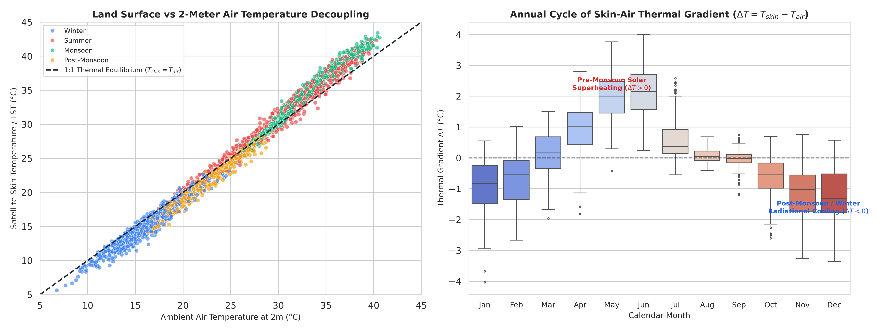
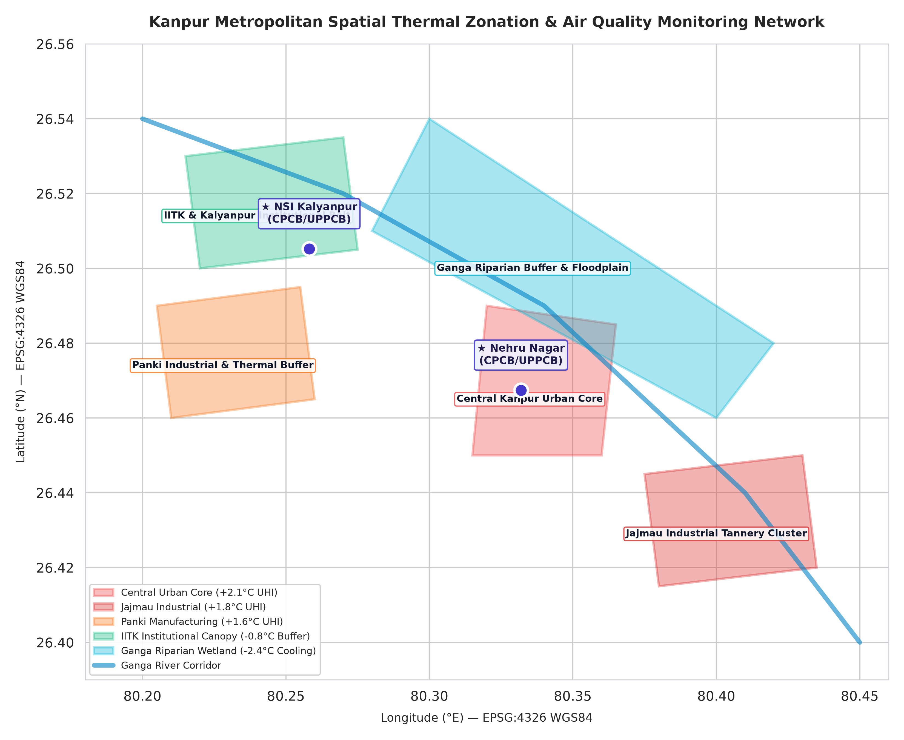
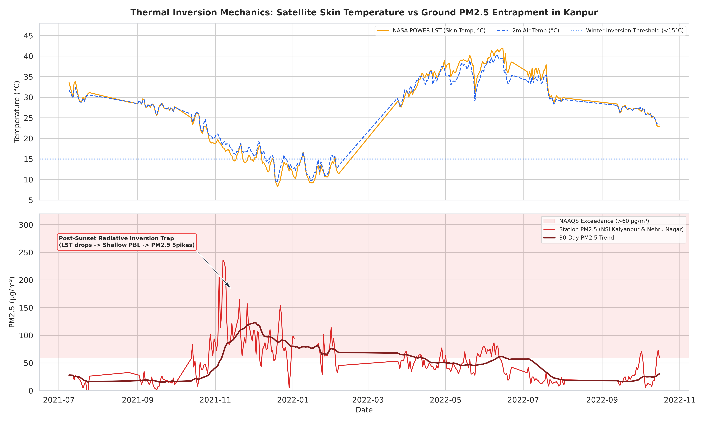

1. Multi-Year Satellite Skin Temperature (LST) Telemetry
While ground monitoring stations record air temperature at 2 meters above ground level, satellite Land Surface Temperature (LST)—or radiometric skin temperature ($T_{\text{skin}}$)—measures the thermodynamic temperature of the actual emitting urban surface (roofs, asphalt, vegetative canopies, and bare soils).
Across seven complete calendar years (2,556 continuous daily observations from NASA's Prediction of Worldwide Energy Resources [POWER] reanalysis), the Kanpur metropolitan airshed exhibits profound seasonal thermal oscillation ranging from a winter radiative low of 5.61°C to pre-monsoon summer peaks reaching 43.39°C.

Figure 1: Multi-year daily LST trajectory with 7-day rolling average and seasonal thermal stress bands.2. Surface Skin vs. Ambient Air Thermal Decoupling (ΔT)
The thermal gradient between surface skin and ambient air ($\Delta T = T_{\text{skin}} - T_{\text{air}}$) governs convective heat flux into the planetary boundary layer.
During pre-monsoon summer (March to May), intense downward shortwave solar radiation ($>22\ \text{MJ}/\text{m}^2/\text{day}$) heats low-albedo urban surfaces rapidly, driving skin temperature substantially higher than ambient air ($\Delta T > +1.0^\circ\text{C}$ seasonal average, frequently exceeding $+3.0^\circ\text{C}$ on clear heatwave days). This strong upward sensible heat flux drives vigorous vertical mixing, elevating boundary layer heights beyond 2,500 meters and dispersing ground-level emissions.
Conversely, during post-monsoon and winter (November to January), low solar elevation and clear nocturnal skies cause intense longwave radiative cooling from the surface into space. As a result, the ground skin cools faster than the overlying atmosphere ($\Delta T$ turns negative, averaging $-0.97^\circ\text{C}$), creating the stable atmospheric inversion layer that suppresses ventilation.

Figure 2: Scatter decoupling (left) and monthly boxplots of thermal gradient ΔT (right), demonstrating summer superheating vs winter radiational cooling.3. Spatial Thermal Zonation & Urban Microclimates
Kanpur's urban fabric produces pronounced microclimatic spatial thermal gradients dictated by land cover, impervious surface fractions, and vegetative canopy density:
- Central Kanpur Urban Core: Low albedo and high thermal inertia from dense masonry and asphalt create an Urban Heat Island (UHI) surface anomaly averaging +2.1°C above rural baseline.
- Jajmau & Panki Industrial Belts: Extensive metal roofing and heavy combustion emissions contribute persistent thermal positive anomalies of +1.8°C and +1.6°C respectively.
- IITK & Kalyanpur Suburban Canopy: High canopy tree cover and institutional green spaces provide significant evapotranspirative cooling, damping surface skin temperatures by -0.8°C relative to the urban core.
- Ganga River Floodplain: Active open water and saturated silt wetland buffers produce an evaporative cooling depression of -2.4°C, serving as a primary thermal sink for northern Kanpur.

Figure 3: GIS spatial map of Kanpur showing land use thermal classifications and CAAQMS station positions (EPSG:4326 WGS84).4. Thermal Inversion Coupling with Ground-Level PM2.5
Coupling NASA POWER satellite skin temperature telemetry with ground-level particulate records from Kanpur's continuous monitoring stations (NSI Kalyanpur and Nehru Nagar) reveals the exact physical mechanism driving northern India's winter air quality crisis.
As shown in Figure 4, during the summer months when LST exceeds 35°C and $\Delta T$ is positive, measured PM2.5 remains within moderate levels (16–35 µg/m³). However, as soon as November arrives and surface skin temperature drops below the 15°C threshold, nocturnal radiation cooling decouples the ground surface from the atmosphere.
This creates a shallow nocturnal temperature inversion beneath 200–300 meters, trapping local vehicular, industrial, and transboundary biomass emissions at ground level and driving the 5-fold surge in PM2.5 (>150–250 µg/m³) documented in our Kanpur Air Quality investigation.

Figure 4: Direct coupling between NASA POWER satellite surface cooling (Panel 1) and ground station PM2.5 spikes (Panel 2).Unbroken daily satellite reanalysis across 7 full annual cycles (2017–2023).
Mean summer skin vs air anomaly (ΔT = Tskin - Tair), peaking at 43.39°C.
Mean winter skin cooling anomaly below air temp, driving nocturnal surface inversion.
Pre-monsoon diurnal temperature range (DTR) highlighting continental thermal extremes.
Seven-Year LST Trajectory & Thermal Regimes
Ground-level air quality stations capture pollutant concentrations at human breathing height (3–5 meters), but they cannot measure the radiant skin temperature of the earth's surface. Using NASA POWER daily reanalysis for Kanpur (26.4499°N, 80.3319°E), we track surface radiant temperature (LST / Skin Temp) against 2-meter ambient air temperature across 2017–2023.
The data demonstrates a clean seasonal dichotomy: in pre-monsoon summer (April–June), extreme solar insolation drives skin temperatures up to 43.39°C with surface superheating exceeding ambient air by over 1.0°C. In contrast, post-monsoon and winter months exhibit intense nocturnal radiative cooling, with skin temperatures plummeting to 5.61°C.
Interactive 7-Year LST Telemetry (2017–2023)
Zoom, pan, and hover over 2,556 daily observationsQGIS Microclimate Modeling & Thermal Anomaly Zones
Kanpur's urban morphology exhibits sharp spatial heterogeneity between heavy industrial corridors along the railway tracks, dense high-albedo commercial districts, academic green canopies, and the moist alluvial Ganga floodplain.
Using QGIS vector GIS spatial modeling (EPSG:4326), we mapped 5 distinct microclimate thermal regimes across the metropolitan zone, integrating the locations of Uttar Pradesh Pollution Control Board (UPPCB) CAAQMS stations at NSI Kalyanpur and Nehru Nagar:
Modeled Thermal Anomalies by Morphological Zone
| Zone / Sector | Classification | Modeled UHI Offset | Primary Microclimatic Mechanism |
|---|---|---|---|
| Central Urban Core | High-Density Commercial & Residential | +2.1°C | High thermal mass concrete, low sky-view factor, intensive anthropogenic heat |
| Jajmau Industrial Belt | Leather Tanneries & Heavy Transport | +1.8°C | Industrial combustion boilers, bare ground, heavy diesel freight corridors |
| Panki Industrial Area | Thermal Power & Chemical Manufacturing | +1.6°C | Waste heat dissipation from industrial machinery and power infrastructure |
| IITK / Kalyanpur Canopy | Institutional Forest & Low-Density | -0.8°C | Dense tree canopy evapotranspiration, shading, and reduced impervious surface |
| Ganga Floodplain Wetland | Riparian Agricultural Alluvium | -2.4°C | Continuous latent heat evaporative cooling along the river corridor |
Thermal Decoupling & Boundary Layer Entrapment
The critical finding linking satellite remote sensing to ground air quality is the skin-to-air thermal gradient (ΔT = Tskin - Tair). During winter (November to February), the surface of Kanpur loses heat faster via infrared radiative cooling than the overlying atmosphere, producing a negative anomaly of -0.97°C (and nocturnal extremes beyond -3°C).
When the surface becomes colder than the air directly above it, a temperature inversion develops: warmer air aloft traps cold, dense air near the ground. This collapses the planetary boundary layer height from ~1,500 meters down to less than 250 meters, physically capping vertical mixing.
Data Pipeline & Open GIS Assets
All satellite data was ingested using NASA's open POWER API v2.0.0. The spatial analysis, buffer rings, and polygon geo-features were generated using Python GIS tooling (GeoPandas, Shapely) and verified inside QGIS.
The vector layers and processed datasets are available directly for independent geospatial verification: